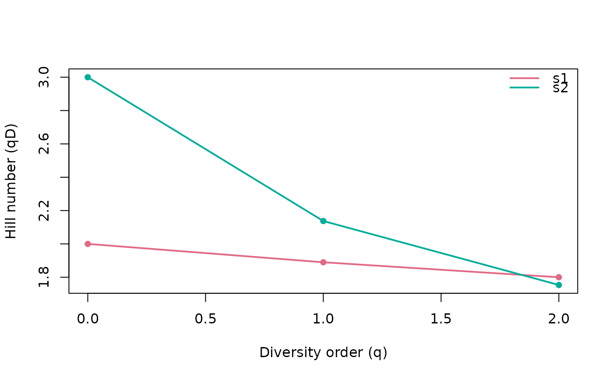

Compute neutral, phylogenetic and/or functional Hill numbers (alpha
diversity) from a single sample or a count table. By default the computation
is cumulative: every diversity type whose inputs are present is returned.
Counts are always available, so neutral is always computed; a tree adds
phylogenetic and a dist adds functional. Supplying both a tree and a
dist therefore returns neutral, phylogenetic and functional side by side in
a single tibble (with a type column). Use type to restrict the output to
a subset.
Arguments
- data
Counts: a numeric vector (one sample), a matrix/data.frame (taxa x samples), a
phyloseqobject or aTreeSummarizedExperiment.- q
Numeric vector of diversity orders (>= 0). Defaults to
c(0, 1, 2)(richness, Shannon, Simpson).- tree
A phylogenetic tree of class
phylowhose tip labels match the taxa indata.- dist
A functional distance matrix (or
dist) over the taxa.- tau
Optional functional distance threshold. Defaults to
max(dist).- type
Diversity type(s) to compute.
"auto"(default) returns every type whose inputs are present (always neutral, plus phylogenetic with atreeand functional with adist). Pass an explicit type, or a character vector of types, to restrict the output – e.g."neutral"ignores any tree/dist carried by the object, andc("neutral", "phylogenetic")drops functional even when adistis supplied. A requested type that lacks its input (e.g."phylogenetic"without atree) is an error.- reference
Reference tree depth for phylogenetic Hill numbers (ignored for neutral and functional types).
"pool"(default) reads every sample at one common depthT = mean(T_j), so values share a comparable axis across samples;"sample"reads each sample at its own depthT_j(effective lineages at that sample's depth). The two coincide on ultrametric trees. This reference depth is intentionally not offered byhillpart(): in a partitionTis fixed at the mean per-sample depth of Chiu et al. (2014), the unique value for whichgamma / alphais a valid decomposition withbetain[1, N].- out
Output shape:
"tibble"(default) returns a long-formatdata.framewith columnsq,sample,value(plus atypecolumn when more than one type is computed) andprint()/plot()methods;"matrix"returns a matrix with samples in rows and diversity orders (q0,q1, ...) in columns, or, when more than one type is computed, a named list of such matrices (one per type).
Value
A long-format data.frame of class hill_diversity (default). With
out = "matrix", a matrix of Hill numbers (samples in rows, diversity
orders q0, q1, ... in columns) for a single type, or a named list of
such matrices when several types are computed.
References
Chao, A., Chiu, C.-H. & Jost, L. (2010). Phylogenetic diversity measures
based on Hill numbers. Phil. Trans. R. Soc. B, 365, 3599-3609.
Alberdi, A. & Gilbert, M.T.P. (2019). A guide to the application of Hill
numbers to DNA-based diversity analyses. Mol. Ecol. Resour., 19, 804-817.
Examples
counts <- matrix(c(10, 0, 5, 2, 8, 1), nrow = 3,
dimnames = list(c("t1", "t2", "t3"), c("s1", "s2")))
hilldiv(counts)
#> Computing "neutral" Hill numbers of "q0", "q1", and "q2".
#> ℹ 3 taxa across 2 samples.
#> <hilldiv3 result: neutral>
#> 6 rows x 3 cols
#>
#> q sample value
#> 1 0 s1 2.000000
#> 2 1 s1 1.889882
#> 3 2 s1 1.800000
#> 4 0 s2 3.000000
#> 5 1 s2 2.137309
#> 6 2 s2 1.753623
hilldiv(counts, q = c(0, 1, 2))
#> Computing "neutral" Hill numbers of "q0", "q1", and "q2".
#> ℹ 3 taxa across 2 samples.
#> <hilldiv3 result: neutral>
#> 6 rows x 3 cols
#>
#> q sample value
#> 1 0 s1 2.000000
#> 2 1 s1 1.889882
#> 3 2 s1 1.800000
#> 4 0 s2 3.000000
#> 5 1 s2 2.137309
#> 6 2 s2 1.753623
plot(hilldiv(counts, q = c(0, 1, 2)))
#> Computing "neutral" Hill numbers of "q0", "q1", and "q2".
#> ℹ 3 taxa across 2 samples.

# Supplying both a tree and a distance matrix returns neutral, phylogenetic
# and functional diversity together, distinguished by a `type` column.
tree <- ape::read.tree(text = "((t1:1,t2:1):1,t3:2);")
dist <- as.matrix(stats::dist(c(t1 = 0, t2 = 1, t3 = 4)))
hilldiv(counts, tree = tree, dist = dist)
#> Computing "neutral", "phylogenetic", and "functional" Hill numbers of "q0",
#> "q1", and "q2".
#> ℹ 3 taxa across 2 samples.
#> <hilldiv3 result: neutral, phylogenetic, functional>
#> 18 rows x 4 cols
#>
#> q sample type value
#> 1 0 s1 neutral 2.000000
#> 2 1 s1 neutral 1.889882
#> 3 2 s1 neutral 1.800000
#> 4 0 s2 neutral 3.000000
#> 5 1 s2 neutral 2.137309
#> 6 2 s2 neutral 1.753623
#> 7 0 s1 phylogenetic 2.000000
#> 8 1 s1 phylogenetic 1.889882
#> 9 2 s1 phylogenetic 1.800000
#> 10 0 s2 phylogenetic 2.500000
#> 11 1 s2 phylogenetic 1.702490
#> 12 2 s2 phylogenetic 1.423529
#> 13 0 s1 functional 2.000000
#> 14 1 s1 functional 1.889882
#> 15 2 s1 functional 1.800000
#> 16 0 s2 functional 1.403846
#> 17 1 s2 functional 1.301798
#> 18 2 s2 functional 1.247423
# Restrict the output with `type` (a scalar or a vector):
hilldiv(counts, tree = tree, dist = dist, type = c("neutral", "functional"))
#> Computing "neutral" and "functional" Hill numbers of "q0", "q1", and "q2".
#> ℹ 3 taxa across 2 samples.
#> <hilldiv3 result: neutral, functional>
#> 12 rows x 4 cols
#>
#> q sample type value
#> 1 0 s1 neutral 2.000000
#> 2 1 s1 neutral 1.889882
#> 3 2 s1 neutral 1.800000
#> 4 0 s2 neutral 3.000000
#> 5 1 s2 neutral 2.137309
#> 6 2 s2 neutral 1.753623
#> 7 0 s1 functional 2.000000
#> 8 1 s1 functional 1.889882
#> 9 2 s1 functional 1.800000
#> 10 0 s2 functional 1.403846
#> 11 1 s2 functional 1.301798
#> 12 2 s2 functional 1.247423